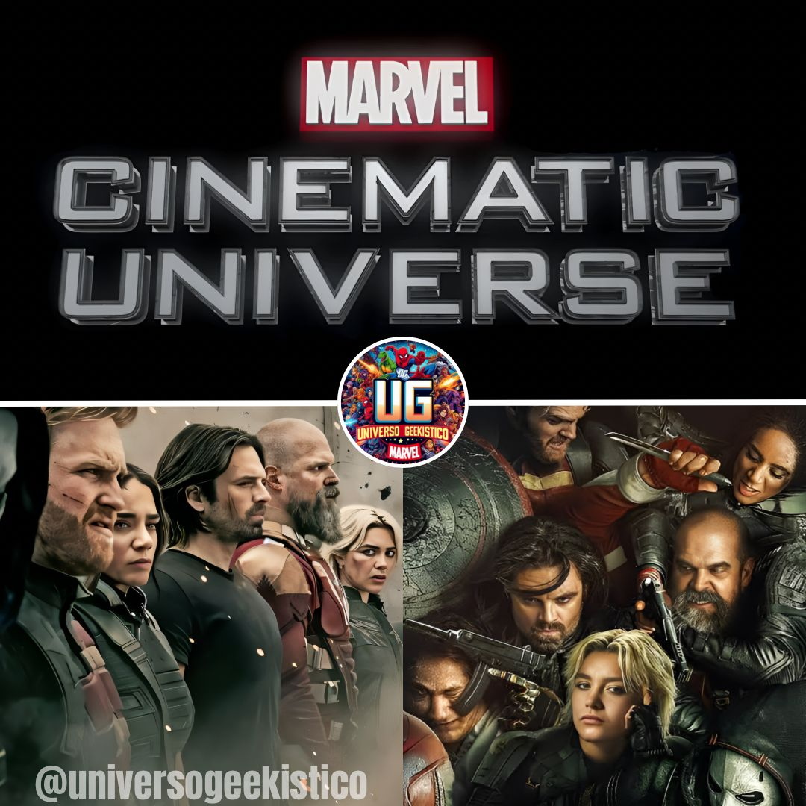

Universo Geekistico
Notícias Recentes:
MARVEL FINALMENTE PISA NO FREIO E PLANEJA NOVO COMEÇO PARA O MCU!

Por Matheus Barbosa da Silva - 15/05/2025 10:05
TRAILER DE “CORAÇÃO DE FERRO” É REVELADO — A SUCESSORA DE TONY STARK CHEGOU!
Por Matheus Barbosa da Silva - 15/05/2025 8:51
TRAILER DE “SUPERMAN” DIRIGIDO POR JAMES GUNN BALANÇA A INTERNET: FÃS ESTÃO EM ÊXTASE!
Por Matheus Barbosa da Silva - 14/05/2025 22:46
DC STUDIOS CONCLUI PRODUÇÃO DE UM DOS SEUS MAIS ESPERADOS FILMES: SUPERGIRL ESTÁ PRÓXIMO DA PRÓXIMA FASE!

Por Matheus Barbosa da Silva - 14/05/2025 00:55
MARVEL MUDA O NOME DE “THUNDERBOLTS*” E DEIXA OS FÃS CHOCADOS!

Por Matheus Barbosa da Silva - 13/05/2025 23:02